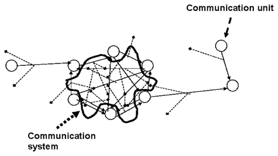

Phần II · Bài 13 — Trao ý nghĩa cho các chu trình vượt qua giới hạn điểm hút cố định
được xác định hoàn toàn từ trước: các kích thích bên ngoài cho trước được liên kết với các tập hút chu kỳ giới hạn được xác định trước của động lực học mạng4 (Hình 2B). Thuật toán được các tác giả mô tả trong [37] dựa trên thuật toán Hebb lặp cổ điển được mô tả trong [38]. Nguyên lý của nó có thể được mô tả như sau: tại mỗi lần lặp học, độ ổn định của mọi mẫu danh định ξμ đều được kiểm tra. Bất cứ khi nào một mẫu chưa đạt được độ ổn định, nơ-ron i chịu trách nhiệm sẽ thấy kết nối của nó được củng cố bằng cách thêm một số hạng Hebb vào tất cả các kết nối synap tác động lên nó:
wij →wij + εs ςμ,ν+1 i ςμ,ν j wis →wis + εb ςμ,ν+1 (5)
i χμ i trong đó εs và εb lần lượt xác định tốc độ học và tốc độ học kích thích.
Để không chỉ lưu trữ các mẫu mà còn đảm bảo khả năng định địa chỉ theo nội dung đủ tốt, các lưu vực hút được "đào sâu" bằng cách thêm nhiễu tường minh trong giai đoạn học.
3.3.2 Thuật toán học "Giám sát trong" ("In-supervised")
Khả năng mã hóa của các mạng được học theo cách "giám sát ngoài" mô tả ở trên là khá tốt. Tuy nhiên, những kết quả này vẫn gây thất vọng so với dung lượng tiềm năng quan sát được ở các mạng ngẫu nhiên [39]. Hơn nữa, chúng tôi chỉ ra rằng việc học quá nhiều tập hút chu kỳ theo cách "giám sát ngoài" khiến chế độ nền của mạng trở nên hoàn toàn hỗn loạn và tương tự như nhiễu trắng.
Việc học dữ liệu được xác định trước tỏ ra quá gò bó đối với mạng. Một thuật toán học "giám sát trong" ("in-supervised") [40], khả thi hơn về mặt sinh học, được đề xuất như một giải pháp thay thế khác biệt hoàn toàn: mạng phải học cách phản ứng với một kích thích bên ngoài bằng cách lặp qua một chuỗi không được xác định trước mà thu được theo một cơ chế bên trong (Hình 2C). Nói cách khác, thông tin được "tạo ra" thông qua quy trình học gán một "ý nghĩa" cho mỗi kích thích bên ngoài: quy trình học thực thi một ánh xạ giữa mỗi kích thích của tập dữ liệu và một tập hút chu kỳ giới hạn của động lực học bên trong mạng, bất kể nó là gì. Trên thực tế, điều này phù hợp với truyền thống mạng nơ-ron của các thuật toán học "ít giám sát hơn" được khởi xướng bởi các công trình tiên phong của Kohonen và Grossberg. Truyền thống này cộng hưởng với các công trình trong tâm lý học nhận thức và triết học kiến tạo (trong số đó có [29, 30, 31, 41]). Thuật toán sắp được trình bày có thể được xem như một sự mở rộng động lực học theo tinh thần của những công trình sơ khai này, nơi sơ đồ mã hóa dựa trên các chu kỳ không-thời gian thay vì các nơ-ron đơn lẻ.
4 Bằng cách triệt tiêu kích thích bên ngoài và đặt tất cả các chu kỳ của chuỗi lμ bằng 1, nhiệm vụ này được quy về nhiệm vụ học cổ điển do Hopfield đề xuất ban đầu: lưu trữ mẫu trong các tập hút điểm cố định của động lực học RNN nền tảng. Nhiệm vụ học được mô tả ở trên hóa ra lại tổng quát hóa nhiệm vụ do Hopfield đề xuất.
Trong thuật toán này, các ánh xạ giữa kích thích bên ngoài và biểu diễn nội tại chu kỳ không-thời gian (4) không được xác định trước khi học. Là đầu vào, thuật toán chỉ nhận tập hợp các kích thích cần học và một khoảng [mincs, maxcs] xác định các giới hạn của chu kỳ được chấp nhận đối với các tập hút chu kỳ giới hạn mã hóa thông tin. Thuật toán này có thể được chia thành ba giai đoạn được lặp đi lặp lại liên tục cho đến khi tìm thấy lời giải:
tái ánh xạ kích thích thành các tập hút chu kỳ không-thời gian Trong giai đoạn này, mạng được cung cấp một kích thích bên ngoài đưa nó vào một tập hút thời gian outputμ (có thể là hỗn loạn). Vì ý tưởng là ràng buộc mạng ít nhất có thể, một ý nghĩa được gán cho kích thích bằng cách liên kết nó với một phiên bản chu kỳ gần kề của tập hút outputμ, gọi là cycleμ, vốn phải là một tập hút nguyên bản5 tuân thủ các giới hạn chu kỳ mincs, maxcs. Bước này được lặp lại cho tất cả các kích thích của tập dữ liệu; học thông tin Các ánh xạ giữa kích thích và các tập hút đề xuất liên kết cycleμ của chúng được thử học bằng một quy trình giám sát ngoài. Tuy nhiên, để tránh ràng buộc mạng quá mức, chỉ một số lượng lặp giới hạn (được đặt là 10 trong phần sau) được thực hiện, ngay cả khi chưa đạt được sự hội tụ; kiểm tra kết thúc Nếu tất cả các kích thích được ánh xạ thành công với các tập hút chu kỳ nguyên bản, quá trình học "giám sát trong" dừng lại, nếu không toàn bộ quy trình được lặp lại.
Cần lưu ý rằng cơ chế học này ngầm cung cấp cho mạng một khả năng chống nhiễu quan trọng. Trước hết, các tập hút mã hóa là những tập hút được mạng đề xuất một cách tự nhiên. Thứ hai, chúng cần có các lưu vực hút lớn và ổn định để chống chọi lại quá trình thử, sai và thích nghi.
4 Lợi ích của các tập hút chu kỳ là gì
4.1 Dung lượng và khả năng chịu nhiễu
Lượng thông tin có thể học được trong một khoảng thời gian chấp nhận được là một trong những câu hỏi quan trọng nảy sinh khi làm việc với bộ nhớ. Ai cũng biết rằng số lượng ký ức được lưu trữ tự liên kết trong mạng Hopfield bằng quy tắc quy định Hebb là rất hạn chế (14% kích thước mạng). Bằng cách sử dụng quy tắc học lặp, dung lượng tăng lên đến bằng kích thước mạng. Như được chỉ ra dưới đây, bộ nhớ này có thể được tăng cường hơn nữa bằng cách lập chỉ mục dữ liệu sử dụng một kích thích bên ngoài. Tuy nhiên, một thước đo quan trọng khác cần được giải quyết đồng thời liên quan đến khả năng định địa chỉ theo nội dung của các ký ức thu được. Chúng ta không chỉ muốn lưu trữ dữ liệu, chúng ta còn muốn có thể truy xuất chúng khi chúng bị nhiễu một phần: các kích thích "lân cận" với một kích thích đã học phải đưa mạng về cùng một tập hút chu kỳ (khi trạng thái nội tại của mạng không "quá xa" tập hút này). Tất nhiên, mọi thứ đều có giá của nó: có một sự cân bằng giữa
5 có nghĩa là "duy nhất".
Bảng 1 Thời gian cần thiết để mã hóa các tập dữ liệu xác định với khả năng định địa chỉ theo nội dung cao nhất có thể bằng cách sử dụng các quy trình giám sát trong và giám sát ngoài. Thời gian học được đo bằng cách lấy trung bình kết quả của 100 lần học. Đơn vị thời gian là một trăm chu kỳ xung nhịp bộ xử lý. Khả năng định địa chỉ theo nội dung được đo bằng khoảng cách Hamming chuẩn hóa (dH tính bằng %) giữa chu kỳ kỳ vọng và chu kỳ thu được khi cả kích thích và trạng thái nội tại ban đầu bị nhiễu nhẹ (nhiễu < 10%). Mỗi kết quả cho thấy giá trị trung bình thu được cho 10 điều kiện ban đầu nhiễu khác nhau xung quanh mỗi dữ liệu đã học của mỗi mạng đã học (tức là học 20 dữ liệu cho ra 10(điều kiện ban đầu nhiễu)*20(kích thước tập)*100(số lần học)=20000 phép đo). Phương sai (không hiển thị ở đây) nhỏ hơn một phần trăm
Thuật toán 5 dữ liệu 10 dữ liệu 20 dữ liệu 50 dữ liệu 150 dữ liệu và kích thước chu kỳ time dH time dH time dH time dH time dH Outsup. - chu kỳ kích thước 4 4 0 26 10 – – – – – – Insup. - chu kỳ kích thước 4 3 0 18 0 50 3 600 10 – – Outsup. - chu kỳ kích thước 2 4 0 13 0 16 15 – – – – Insup. - chu kỳ kích thước 2 3 0 18 0 51 0 81 12 650 8 Outsup. - Điểm cố định 1 0 12 0 40 4 – – – – Insup. - Điểm cố định 2 0 8 0 32 1 300 10 – – kích thước tối đa của tập dữ liệu và khả năng định địa chỉ theo nội dung của dữ liệu đã học. Bảng 1 so sánh các kết quả này đối với việc lưu trữ các kích thích khác nhau trong các tập hút điểm cố định, và trong các tập hút chu kỳ kích thước 2 và kích thước 4.
Có thể rút ra những quan sát khác nhau. Quan sát đầu tiên đến từ các kết quả rất khác nhau được ghi nhận giữa quy trình học giám sát trong và giám sát ngoài. Ở quy trình giám sát ngoài, việc học các ánh xạ tới các tập hút được xác định từ trước tỏ ra quá gò bó. Trong cách tiếp cận giám sát trong, bằng cách không ràng buộc mạng vào việc học các chu kỳ định sẵn, mạng được tự do tạo ra các ánh xạ mong muốn của mình. Sự gia tăng dung lượng tỏ ra rất đáng giá. Ví dụ, nếu chúng ta thất bại trong việc mã hóa 50 kích thích vào các chu kỳ kích thước 2 cho trước từ trước, chúng ta lại học thành công 150 ánh xạ, với khả năng định địa chỉ theo nội dung tốt, bằng cách sử dụng quy trình giám sát trong. Gấp sáu lần kích thước mạng! Một vấn đề hiển nhiên trong quy trình giám sát ngoài nằm ở số lượng ánh xạ khổng lồ cần thiết: mã hóa 50 kích thích trong các chu kỳ kích thước 2 thực chất đòi hỏi phải học 100 ánh xạ, tức là số lượng chu kỳ nhân với kích thước của chúng.
Tổng quát hơn, khả năng "tìm thấy" một số lượng lớn các ánh xạ và sự khó khăn khi học chúng từ trước chứng minh tầm quan trọng của việc xác định hợp lý cách biểu diễn thông tin.
Quan sát thứ hai nằm ở sự phụ thuộc giữa dung lượng và kích thước của các tập hút chu kỳ. Đối với các ánh xạ giám sát trong, các kết quả tương tự thu được cho việc lưu trữ các tập hút điểm cố định và việc lưu trữ các tập hút chu kỳ kích thước 4. Các tập hút chu kỳ kích thước 2 cho kết quả tốt nhất. Quan sát cuối cùng liên quan đến khả năng định địa chỉ theo nội dung đầy nghịch lý thu được khi lưu trữ các tập hút chu kỳ kích thước 2 bằng quy trình giám sát trong: lưu trữ 150 dữ liệu cho khả năng định địa chỉ theo nội dung tốt hơn so với lưu trữ 50 dữ liệu. Trong quy trình giám sát trong, khả năng định địa chỉ theo nội dung có hai nguyên nhân: việc "đào sâu" tường minh các lưu vực hút trong các quy trình con có giám sát và quá trình thử, sai và thích nghi vốn có. Việc đào sâu tường minh các lưu vực hút trở nên bất khả thi đối với tập dữ liệu lớn trong bản cài đặt hiện tại. Bởi vì việc học 150 dữ liệu đòi hỏi nhiều phép thử hơn so với việc học 50 dữ liệu, nên thu được khả năng định địa chỉ theo nội dung lớn hơn.
4.2 Phân tích ký hiệu và các tập hút giả
Trong phần trước, chúng tôi đã chỉ ra rằng các tập hút chu kỳ kích thước 4 và các tập hút điểm cố định dẫn đến các kết quả tương tự nhau về dung lượng mã hóa và khả năng định địa chỉ theo nội dung. Điều này gợi ý rằng chúng có thể được sử dụng tương tự nhau. Chúng tôi chứng minh ở đây rằng đây là một giả định đúng.
Sự tồn tại của các lưu vực hút xung quanh các tập hút mang lại khả năng định địa chỉ theo nội dung: các ánh xạ đã học có thể được truy xuất khi có nhiễu. Một câu hỏi quan trọng là cần biết điều gì nằm phía sau ranh giới của các lưu vực hút này: điều gì xảy ra nếu mạng không "hiểu" được kích thích bị nhiễu. Một mối bận tâm lớn trong bộ nhớ liên kết nằm ở thực tế rằng các trạng thái "khác" ngoài các trạng thái bộ nhớ cũng có thể là tập hút của động lực học: các tập hút không mong muốn có thể xuất hiện ở đầu ra. Câu hỏi đặt ra là liệu những tập hút này có nên được coi là dữ liệu giả hay không.
Ý tưởng rất trực quan mà chúng tôi đề xuất ở đây là nếu tập hút là hỗn loạn hoặc nếu chu kỳ của nó khác với dữ liệu đã học, thì rất dễ nhận ra nó ngay lập tức và do đó loại bỏ nó. Ngược lại, mọi thứ trở nên khó khăn hơn nếu tập hút quan sát được có chu kỳ tương tự như các tập hút đã học. Trong trường hợp đó, thực tế là không thể biết thông tin này có liên quan hay không nếu không so sánh nó với tất cả dữ liệu đã học. Điều này dẫn chúng tôi đến việc định nghĩa một tập hút như vậy – có cùng chu kỳ với dữ liệu đã học, nhưng vẫn khác với tất cả chúng – là một tập hút giả.
Hình 4 so sánh tỷ lệ của các tập hút khác nhau thu được đối với các mạng ánh xạ kích thích tới các tập hút điểm cố định và tới các tập hút không-thời gian kích thước 4 bằng cách sử dụng quy trình giám sát trong. Các tỷ lệ này được đo trong quá trình hoạt động tự phát và khi mạng được cấp các kích thích bị nhiễu nhẹ (nhiễu < 10%). Các loại tập hút sau đây được đề xuất: các tập hút hỗn loạn,
Hoạt động tự phát Kích thích bị nhiễu nhẹ

Các tập hút:
Ánh xạ tới các điểm cố định
Đã học
Giả
Ngoài phạm vi
Ánh xạ tới các chu kỳ kích thước 4
Hỗn loạn
Hình 4 Tỷ lệ của các tập hút ký hiệu khác nhau quan sát được trong các mạng đã học 30 ánh xạ "giám sát trong". Hai loại kết quả được hiển thị: thứ nhất, tỷ lệ các tập hút thu được trong quá trình hoạt động tự phát (tức là đối với các kích thích ngẫu nhiên). Thứ hai, tỷ lệ các tập hút thu được đối với các kích thích chỉ bị nhiễu nhẹ (dưới 10%). Trong cả hai trường hợp, trạng thái ban đầu của mạng được khởi tạo ngẫu nhiên. 100 mạng đã học với mỗi lần 1000 cấu hình đã được kiểm tra. Phương sai thu được trong các phép đo này nhỏ hơn một phần trăm các tập hút có chu kỳ khác với chu kỳ kỳ vọng (các tập hút "ngoài phạm vi"), các tập hút đã học và cuối cùng là các tập hút chưa học có cùng chu kỳ với tập hút đã học, tức là các tập hút giả. Các phân tích chi tiết và mở rộng hơn có thể được tìm thấy trong [42].
Trong quá trình hoạt động tự phát, khi các kích thích được ánh xạ tới các tập hút điểm cố định, có vẻ như tỷ lệ các tập hút hỗn loạn và các tập hút "ngoài phạm vi" giảm nhanh chóng về không. Ngược lại, số lượng dữ liệu giả tăng lên đáng kể. Trên thực tế, quy trình học có xu hướng ổn định mạng bằng cách áp đặt các trọng số đối xứng và các tự kết nối dương (đây là điều kiện để xác định một hàm năng lượng cho mạng). Khi các kích thích được ánh xạ tới các tập hút chu kỳ, số lượng các tập hút hỗn loạn trở nên chiếm ưu thế6.
Khi các kích thích đã học bị nhiễu nhẹ được đưa vào mạng được khởi tạo ở một trạng thái ngẫu nhiên, những kết quả thú vị xuất hiện. Đối với các mạng được huấn luyện điểm cố định, trong khoảng 20% các quan sát chúng ta phải đối mặt với dữ liệu giả! Ngược lại, đối với các mạng được huấn luyện chu kỳ 4, không gian dành cho các tập hút giả trở nên nhỏ hơn 5%! Nếu xác suất khôi phục chu kỳ hoàn hảo chỉ bằng 58%, sự hiện diện mạnh mẽ của hỗn loạn (28%) có thể giúp khôi phục tập hút kỳ vọng: trong một quy trình mà các trạng thái của mạng được điều chỉnh nhẹ trong trường hợp gặp phải quỹ đạo hỗn loạn, cho đến khi tìm thấy một tập hút chu kỳ, chúng ta gần như chắc chắn thu được ánh xạ chính xác vì sự hiện diện của các tập hút giả là dưới 5%. Điều này được kiểm chứng bằng thực nghiệm. Điều này có vẻ phù hợp với đề xuất rằng sự hiện diện của một mức độ nhiễu ngẫu nhiên thấp có thể dẫn đến việc "thuần hóa hỗn loạn" bằng cách ổn định các quỹ đạo lang thang [43, 44].
Khi học các ánh xạ tới các tập hút chu kỳ, sự hiện diện không đáng kể của dữ liệu giả đối với các kích thích bị nhiễu nhẹ tương phản với sự hiện diện không nhỏ của nó trong hoạt động tự phát. Chúng tôi tin rằng sự hiện diện này có thể có tác động tích cực. Thật vậy, điều này phản ánh rằng bộ nhớ mạng chưa bị bão hòa: ở xa các ánh xạ hiện có, các tập hút tiềm năng khác vẫn là những ứng cử viên tốt cho các ký ức mới.
5 Động lực học tự phát và Động lực học hỗn loạn
Phần trước đã chỉ ra rằng động lực học hỗn loạn trở thành động lực học nền của mạng sau khi học các chu kỳ. Các kết quả thu được sau khi học các chu kỳ định sẵn bằng thuật toán giám sát ngoài cũng tương tự [25]. Nếu sự hiện diện của các tập hút hỗn loạn ngăn chặn sự gia tăng của dữ liệu giả, nó có thể có một hàm ý quan trọng khác: bằng cách lang thang khắp không gian pha, nó có thể giúp mạng hội tụ về chu kỳ được ánh xạ ban đầu. Để hiểu rõ hơn về loại hỗn loạn gặp phải, động lực học hỗn loạn thu được sau khi học giám sát ngoài và học giám sát trong được so sánh ở đây.
6 Trên thực tế, chúng tôi đã đề xuất quy tắc học này như một con đường khả dĩ dẫn đến hỗn loạn: bạn càng học nhiều, chế độ tự phát của mạng càng có xu hướng trở nên hỗn loạn [25].
5.1 Các phân tích cổ điển
Nhiều kỹ thuật tồn tại để đặc trưng hóa động lực học hỗn loạn [45]. Ở đây, động lực học hỗn loạn được đặc trưng hóa bằng các bản đồ hồi quy, phổ công suất và bằng cách phân tích phổ Lyapunov của chúng. Việc tính toán phổ Lyapunov được thực hiện thông qua trực giao hóa lại Gram-Schmidt đối với ma trận Jacobian đã tiến hóa của hệ thống (được ước tính tại mỗi bước thời gian từ các phương trình của hệ thống), như được trình bày chi tiết trong [46].
Trong Hình 5, từ phân tích bản đồ hồi quy và phổ công suất cho thấy các mạng sử dụng học "giám sát ngoài" để ghi nhớ các ánh xạ biểu hiện sự hiện diện của một "hỗn loạn sâu" rất thiếu thông tin, tương tự như nhiễu trắng. Hỗn loạn này có thể liên quan đến "siêu hỗn loạn" vì xuất hiện nhiều hơn một số mũ Lyapunov dương lớn [47]. Nói cách khác, việc có quá nhiều tập hút chu kỳ giới hạn cạnh tranh nhau dẫn đến động lực học phi cấu trúc.
Ngược lại, việc học các ánh xạ "giám sát trong" bảo tồn nhiều cấu trúc hơn trong động lực học hỗn loạn và dẫn đến một hỗn loạn rất giàu thông tin mà chúng tôi gọi là "hỗn loạn bị ức chế" ("frustrated chaos") [48]. Bản đồ hồi quy từ một nơ-ron đơn lẻ cho thấy sự hiện diện cao của trạng thái bão hòa, vốn là đặc trưng của hỗn loạn gián đoạn [49]. Phổ Lyapunov thu được cho thấy hỗn loạn này có thể liên quan đến sự lang thang hỗn loạn [50]. Trong loại hỗn loạn này, động lực học bị hút về các ký ức đã học – điều được chỉ ra bởi các số mũ Lyapunov âm – trong khi đồng thời nó thoát ra khỏi chúng – điều được chỉ ra bởi sự hiện diện của ít nhất một số mũ Lyapunov dương. Tuy nhiên, số mũ Lyapunov dương này chỉ hơi dương nhằm bảo tồn dấu vết của lịch sử quá khứ của hệ thống và của các ký ức đã học. Chế độ

A
0 0.01 0.02 0.03
0 -2 -1 0.5 phổ công suất
1
0 1 state(t)
Số mũ Lyapunov
state(t)
0
-1
-1
0 1 state(t-1) -1 chu kỳ 0 4000 8000
Chỉ số 0 2 3 4 5 6 8 1 910 7
0
-1
1 state(t-1)
B
0 0.01 0.02 0.03
0 -2 -1 0.5 phổ công suất
1
0 1 state(t)
Số mũ Lyapunov
state(t)
0
-1
-1
0 1 state(t-1) -1 chu kỳ 0 4000 8000
Chỉ số 0 2 3 4 5 6 8 1 910 7
0
-1
1 state(t-1)
Hình 5 Bản đồ hồi quy của tín hiệu trung bình mạng (các hình đầu tiên từ trái sang), bản đồ hồi quy của một nơ-ron cụ thể (các hình thứ hai), phổ công suất của tín hiệu trung bình mạng (các hình thứ ba), và phổ Lyapunov (các hình cuối cùng). (A) Chế độ hỗn loạn gặp phải trong các mạng ngẫu nhiên và mạng học giám sát ngoài là đặc trưng của siêu hỗn loạn. (B) Chế độ hỗn loạn gặp phải trong các mạng học giám sát trong được các tác giả định nghĩa là "hỗn loạn bị ức chế". Được sửa đổi với sự cho phép từ Molter và cộng sự (2007)
ức chế này được tăng cường bởi một số chế độ ổn định trung tính được chỉ ra bởi sự hiện diện của nhiều số mũ có giá trị gần bằng không.
5.2 Hỗn loạn bị ức chế
Để hiểu rõ hơn về hai loại hỗn loạn này, quy trình sau được áp dụng: sau khi học một tập dữ liệu, kích thích bên ngoài được biến đổi nhẹ từ một kích thích đã học này sang một kích thích đã học khác. Nó cho phép chúng tôi phân tích sự chuyển đổi từ tập hút chu kỳ này sang tập hút chu kỳ khác. Trong trường hợp các tập hút điểm cố định, một sự chuyển đổi sắc nét được kỳ vọng (trên thực tế, nhiều chuyển đổi trung gian có khả năng xảy ra do sự hiện diện của các tập hút giả). Sau khi học các tập hút chu kỳ, động lực học hỗn loạn được kỳ vọng và thực sự xảy ra như trong Hình 6. Để phân tích động lực học hỗn loạn này, xác suất xuất hiện của các tập hút chu kỳ giới hạn lân cận xảy ra trong các cửa sổ thời gian nhỏ được tính toán. Trong Hình 6A, mạng đã học 4 kích thích tới các tập hút chu kỳ kích thước 4 bằng thuật toán Hebb "giám sát ngoài". Thuật toán này ràng buộc mạng rất mạnh và hệ quả là động lực học hỗn loạn tỏ ra rất thiếu thông tin: bằng cách biến đổi kích thích bên ngoài từ tập hút này sang tập hút khác, một hỗn loạn mạnh xuất hiện (được chỉ ra bởi số mũ Lyapunov) và mọi thông tin liên quan đến hai tập hút chu kỳ giới hạn này đều bị mất.
Ngược lại, khi ánh xạ 4 kích thích tới các chu kỳ 4 bằng thuật toán "giám sát trong" (Hình 6B), khi biến đổi kích thích bên ngoài từ tập hút này sang tập hút khác, hỗn loạn gặp phải trên đường đi tỏ ra có cấu trúc hơn nhiều: các số mũ Lyapunov nhỏ và sự hiện diện mạnh mẽ của các chu kỳ giới hạn lân cận rất dễ quan sát.
A siêu hỗn loạn B hỗn loạn bị ức chế
0 100 50
0 100 50
Số mũ Lyapunov
Số mũ Lyapunov
0 1 0.5 -0.5
0 1 0.5 -0.5
% chu kỳ được khôi phục (a) (b) (a) (b)
% chu kỳ được khôi phục
0 100 20 40 80 60
0 100 20 40 80 60
Biến thiên kích thích Biến thiên kích thích
Hình 6 Xác suất xuất hiện của các tập hút chu kỳ giới hạn lân cận trong một động lực học hỗn loạn (trục y). Bằng cách biến đổi chậm kích thích bên ngoài từ một kích thích đã học trước đó (vùng (a)) sang một kích thích đã học khác (vùng (b)), động lực học của mạng đi từ tập hút chu kỳ giới hạn liên kết với kích thích trước đến tập hút chu kỳ giới hạn liên kết với kích thích sau. Xác suất xuất hiện của chu kỳ (a) và của chu kỳ (b) được vẽ (màu đen). Số mũ Lyapunov của động lực học thu được cũng được vẽ (màu xám). (A) Sau khi học "giám sát ngoài", siêu hỗn loạn được quan sát thấy ở giữa các tập hút đã học. (B) Cùng điều kiện đó dẫn đến hỗn loạn bị ức chế sau khi học "giám sát trong". In lại với sự cho phép từ Molter và cộng sự (2007)
Cấu trúc động lực học của "hỗn loạn bị ức chế" tiết lộ sự tồn tại của các tập hút cạnh tranh lân cận. Nó cho thấy hiện tượng ức chế thu được khi mạng do dự giữa hai (hoặc nhiều) chu kỳ lân cận, chuyển từ chu kỳ này sang chu kỳ khác.
Khi mạng lặp qua một chu kỳ không-thời gian, các mẫu khác nhau xác định một chuỗi kích hoạt cho mỗi nơ-ron. Ví dụ, trong một chu kỳ kích thước 2, có 4 chuỗi khả dĩ tồn tại: (−1, −1), (−1, 1), (1, −1) và (1, 1). Theo đó, tất cả các nơ-ron sẽ nằm trong 4 quần thể nơ-ron khác nhau tương ứng với 4 chuỗi kích hoạt khả dĩ (ví dụ, một quần thể là tất cả các nơ-ron có cùng chuỗi phát xung (−1, 1)). Tổng quát hơn, mỗi chu kỳ không-thời gian được đặc trưng bởi các quần thể nơ-ron riêng biệt khóa pha với nhau. Thật thú vị khi xem quá trình chuyển đổi diễn biến như thế nào giữa hai tổ hợp quần thể nơ-ron khác nhau khi biến đổi kích thích bên ngoài từ một kích thích đã học này sang một kích thích đã học khác (trong cùng thí nghiệm như mô tả ở trên). Trong động lực học hỗn loạn bị ức chế, chúng tôi đã chứng minh [51] rằng các quần thể nơ-ron thu được trong hoạt động chuyển tiếp ngắn phản ánh đồng thời cả hai tập hút lân cận. Điều này có xu hướng chỉ ra rằng sự ức chế không chỉ mang tính thời gian mà còn mang tính không gian.
6 Thảo luận
Kể từ khi được phát hiện cách đây 25 năm, các tập hút điểm cố định trong mạng nơ-ron hồi quy đã được đề xuất là những ứng cử viên tốt cho việc biểu diễn các bộ nhớ định địa chỉ theo nội dung. Một lý do nằm ở khả năng thiết lập về mặt toán học khả năng định địa chỉ theo nội dung của chúng bằng cách chỉ ra sự tồn tại của các hàm Lyapunov. Lý do quan trọng khác nằm ở quy tắc Hebb khả thi về mặt sinh lý thần kinh được sử dụng để huấn luyện các mạng này. Dựa trên những cân nhắc này, người ta chứng minh rằng các tập hút chu kỳ giới hạn cũng là những ứng cử viên tốt cho việc biểu diễn các bộ nhớ liên kết. Thứ nhất, nếu khả năng định địa chỉ theo nội dung của các ký ức thu được không thể chứng minh bằng toán học, thì các thí nghiệm tính toán sâu rộng đã chứng minh sự tồn tại của chúng. Sau đó, quy tắc học Hebb bất đối xứng theo thời gian được sử dụng không hề kém khả thi hơn về mặt sinh học.
Hình 7A cho thấy góc nhìn sơ đồ thường được sử dụng để biểu diễn các bộ nhớ định địa chỉ theo nội dung trong các tập hút điểm cố định. Các ký ức được liên kết với các cực tiểu của một hàm năng lượng và tất cả các trạng thái đều bị hút về một trong những ký ức đã học. Tuy nhiên, việc lưu trữ thông tin trong các tập hút điểm cố định có một nhược điểm: nó có xu hướng ổn định toàn bộ động lực học mạng và tỏ ra khó tránh khỏi sự hiện diện áp đảo của các tập hút giả (Hình 7B). Hệ quả là việc khai thác các mạng này trở nên rất tế nhị: làm thế nào để quyết định xem một tập hút điểm cố định thu được là một thông tin liên quan đã học trước đó hay là một thông tin giả. Một bộ nhớ về những ký ức này phải được duy trì để so sánh thêm! Việc học dữ liệu bằng cách dựa vào các tập hút chu kỳ mang lại động lực học thú vị hơn trong mạng. Các tập hút giả không còn tràn ngập toàn bộ không gian pha nữa. Thay vào đó, các tập hút hỗn loạn xuất hiện như chế độ nền của mạng (Hình 7C). Sự dễ dàng phân biệt một quỹ đạo hỗn loạn với một chu kỳ có thể ngăn chặn việc khai thác sai lầm các mạng này: khi hỗn loạn xuất hiện, chúng ta biết ngay rằng ánh xạ đã thất bại. Theo đó, việc gán ý nghĩa cho các chu kỳ dường như là một giải pháp tốt hơn.
A B C
Các tập hút giả Các tập hút hỗn loạn
Năng lượng
Năng lượng
Năng lượng
Không gian trạng thái
Không gian trạng thái
Không gian trạng thái
Hình 7 Sơ đồ minh họa các tập hút đã học (được đánh dấu bằng hình bầu dục) và các lưu vực hút của chúng được biểu diễn bằng một hàm năng lượng triển khai trong không gian trạng thái. (A) Trường hợp lý tưởng: không gian trạng thái được chia bởi các lưu vực hút của các tập hút đã học. (B) Bức tranh thực tế hơn thu được sau khi học các tập hút điểm cố định: sự hiện diện mạnh mẽ của các tập hút giả xuất hiện. (C) Sau khi học các tập hút chu kỳ (vẫn được đặc trưng bởi các lưu vực hút): sự hiện diện mạnh mẽ của động lực học hỗn loạn chiếm ưu thế. Không thể xác định hàm năng lượng trong các vùng hỗn loạn
Để nghiên cứu sâu hơn loại động lực học hỗn loạn xuất hiện khi học các tập hút chu kỳ không-thời gian trong một mạng, hai phiên bản đối lập hoàn toàn của dữ liệu chu kỳ được đề xuất. Thứ nhất, các kích thích được ánh xạ tới các chu kỳ định sẵn. Điều này xác định một thuật toán học "giám sát ngoài". Trong phiên bản thứ hai, các tập hút chu kỳ được liên kết với các kích thích bên ngoài không được quy định trước khi học mà được rút ra từ những tập hút được mạng đề xuất một cách tự phát. Điều này xác định một thuật toán học "giám sát trong". Như kỳ vọng, các kết quả sơ bộ của chúng tôi (Bảng 1) xác nhận thực tế rằng bằng cách không ràng buộc mạng, học "giám sát trong" mang lại hiệu suất mã hóa rất tốt so với trường hợp "giám sát ngoài" (và so với việc học các tập hút điểm cố định).
Khi xem xét động lực học tự phát (động lực học quan sát được khi các kích thích chưa học được đưa vào mạng). Ở một nơi khác [25], người ta đã chỉ ra rằng mạng càng phải lưu trữ nhiều thông tin trong các tập hút của nó thì chế độ động lực học tự phát của nó càng có xu hướng hỗn loạn. Hỗn loạn thực chất là kho chứa lớn nhất của các tập hút chu kỳ tiềm năng. Hình 5 cho thấy rằng khi áp dụng học "giám sát ngoài", hỗn loạn mang một hình dạng rất phi cấu trúc tương tự như nhiễu trắng. Lý do nằm ở các ràng buộc áp đặt bởi quá trình học này: số lượng ánh xạ mà mạng phải học bằng số lượng chu kỳ nhân với kích thước của chúng. Ngược lại, học "giám sát trong", bằng cách "tôn trọng" hơn động lực học nội tại của mạng, duy trì được nhiều cấu trúc hơn trong hỗn loạn thu được. Hình 6 cho thấy vẫn có thể quan sát thấy trong chế độ hỗn loạn này dấu vết của các tập hút đã học.
Hỗn loạn được đặc trưng bởi sự hiện diện của các thành phần chu kỳ mạnh mà động lực học lang thang ngẫu nhiên giữa chúng rất giống với một dạng hỗn loạn nổi tiếng trong tài liệu: sự lang thang hỗn loạn [50]. Tuy nhiên, một sự khác biệt cơ bản nằm ở tính minh bạch và khả năng khai thác các chu kỳ đó. Ở đây, hỗn loạn này xuất hiện như một hệ quả của quy trình học. Bằng cách ép các chu kỳ vào mạng (bằng cách tinh chỉnh các tham số kết nối), trong một số cấu hình, mạng do dự giữa các chu kỳ đã học dẫn đến các tập hút cạnh tranh lẫn nhau và những sự lang thang khó lường giữa sự xuất hiện ngắn ngủi của các tập hút này. Chế độ phức tạp nhưng vẫn rất có cấu trúc và giàu thông tin này được gọi là "hỗn loạn bị ức chế". Hành vi này có thể liên quan đến các phát hiện thực nghiệm nơi hoạt động vỏ não liên tục được chứng minh là bao gồm một tập hợp các trạng thái vỏ não chuyển đổi động tương ứng với hoạt động do kích thích gợi lên [13].
Từ Hình 4 và 7, chúng ta có thể nói rằng ranh giới của lưu vực hút của các chu kỳ đã học chủ yếu là hỗn loạn. Hơn nữa, chúng tôi đã chỉ ra rằng hỗn loạn này tỏ ra rất có cấu trúc và đại diện cho các tập hút đã học lân cận sau khi học "giám sát trong". Hệ quả là, bằng cách thêm nhiễu nhẹ vào động lực học hỗn loạn này, chúng ta có cơ hội cao khôi phục được tập hút kỳ vọng. Tính chất truy xuất được tăng cường nhờ nhiễu này phù hợp với hiện tượng cộng hưởng ngẫu nhiên, vốn nổi tiếng trong các hệ động lực phi tuyến [52]. Động lực học hỗn loạn này có thể được xem như một cơ chế mạnh mẽ để khám phá không gian trạng thái, "thông minh" hơn so với tìm kiếm ngẫu nhiên vì quỹ đạo của nó lang thang gần các vùng có ý nghĩa.
Chúng tôi đã chứng minh rằng động lực học phụ thuộc rất nhiều vào thông tin mà chúng ta muốn học. Các tập hút điểm cố định có xu hướng ổn định mọi động lực học. Việc ép các chu kỳ định sẵn bằng học "giám sát ngoài" tỏ ra rất khó khăn, không hiệu quả và động lực học hỗn loạn tương tự như nhiễu trắng lan rộng khắp toàn bộ không gian pha. Các kết quả tốt hơn thu được với học "giám sát trong". Điều này mang lại ý nghĩa cho góc nhìn sinh học và nhận thức: các hệ thống sinh học đề xuất cách riêng của chúng để xử lý tác động bên ngoài bằng cách làm nhiễu loạn nhẹ hoạt động bên trong của chúng. Nó nhấn mạnh tầm quan trọng của việc xác định hợp lý cách biểu diễn và mã hóa thông tin. Tuy nhiên, phiên bản hiện tại của thuật toán "giám sát trong" tỏ ra khó diễn giải và khó "kỹ thuật hóa". Để biến thuật toán này thành một công cụ kỹ thuật mạnh mẽ, chúng tôi tin rằng quy trình mã hóa cần được cải thiện dựa trên các bằng chứng sinh học khả thi hơn.
Tài liệu tham khảo
1. S. Amari. Learning pattern sequences by self-organizing nets of threshold elements. IEEE Transactions on computers, 21:1197, 1972. 2. J.J. Hopfield. Neural networks and physical systems with emergent collective computational abilities. Proceedings of the National Academy of Sciences USA, 79:2554–2558, April 1982. 3. S. Grossberg. Neural Networks and Natural Intelligence. MIT Press, Cambridge, 1992. 4. D.J. Amit, G. Gutfreund, and H. Sompolinsky. Statistical mechanics of neural networks near saturation. Ann. Phys., 173:30–67, 1987. 5. E. Gardner. Maximum storage capacity in neural networks. Europhysics Letters, 4:481–485, 1987. 6. E. Gardner and B. Derrida. Three unfinished works on the optimal storage capacity of networks. J. Physics A: Math. Gen., 22:1983–1994, 1989. 7. D.J. Amit and S. Fusi. Learning in neural networks with material synapses. Neural Computation, 6:957–982, 1994. 8. E. Domany, J.L. van Hemmen, and K. Schulten, editors. Models of Neural Networks, Vol. 1. Springer, 2nd edition, 1995. 9. J. Nicolis and Tsuda. Chaotic dynamics of information processing. the ’magic number seven plus-minus two’ revisited. Bulletin of Mathematical Biology, 47:343–365, 1985. 10. C.A. Skarda and W. Freeman. How brains make chaos in order to make sense of the world. Behavioral and Brain Sciences, 10:161–195, 1987. 11. A. Babloyantz and Lourenço. Computation with chaos: A paradigm for cortical activity. Proceedings of National Academy of Sciences, 91:9027–9031, 1994. 12. E. Rodriguez, N. George, J.P. Lachaux, B. Renault, J. Martinerie, B. Reunault, and F.J. Varela. Perception’s shadow: long-distance synchronization of human brain activity. Nature, 397:
430–433, 1999. 13. T. Kenet, D. Bibitchkov, M. Tsodyks, A. Grinvald, and A. Arieli. Spontaneously emerging cortical representations of visual attributes. Nature, 425:954–956, 2003. 14. T.V. Bliss and T. Lomo. Long-lasting potentiation of synaptic transmission in the dentate area of the anaesthetized rabbit following stimulation of the perforant path. Journal of Physiology, 232:331–356, 1973. 15. D. Hebb. The organization of behavior. Wiley-Interscience, New York, 1949. 16. S. Amari. Neural theory of association and concept-formation. Biological Cybernetics, 26:175–185, 1977. 17. S. Amari and K. Maginu. Statistical neurodynamics of associative memory. Neural Networks, 1:63–73, 1988. 18. D.J. Amit. The hebbian paradigm reintegrated: local reverberations as internal representations. Behavioral Brain Science, 18:617–657, 1995. 19. N. Brunel, F. Carusi, and S. Fusi. Slow stochastic hebbian learning of classes of stimuli in a recurrent neural network. Network: Computation in Neural Systems, 9:123–152, 1997. 20. S. Fusi. Hebbian spike-driven synaptic plasticity for learning patterns of mean firing rates. Biological Cybernetics, 87:459–470, 2002. 21. D.J. Amit and G. Mongillo. Spike-driven synaptic dynamics generating working memory states. Neural Computation, 15:565–596, 2003. 22. W.B. Levy and O. Steward. Temporal contiguity requirements for long term associative potentiation/depression in the hippocampus. Neuroscience, 8:791–797, 1983. 23. G. Bi and M. Poo. Distributed synaptic modification in neural networks induced by patterned stimulation. Nature, 401:792–796, 1999. 24. A. Waibel. Modular construction of time-delay neural networks for speech recognition. Neural Computation, 1(1):39–46, 1989. 25. C. Molter, U. Salihoglu, and H. Bersini. The road to chaos by time asymmetric hebbian learning in recurrent neural networks. Neural Computation, 19(1):100, 2007. 26. G. Buzsaki. Rhythms of the Brain. Oxford University Press, USA, 2006. 27. W. Singer. Neuronal synchrony: A versatile code for the definition of relations? Neuron, 24:49–65, 1999. 28. D.J. Amit and N. Brunel. Learning internal representations in an attractor neural network with analogue neurons. Network: Computation in Neural Systems, 6:359–388, 1994. 29. F. Varela, E. Thompson, and E. Rosch. The Embodied Mind: Cognitive Science and Human Experience. MIT Press, 1991. 30. P. Erdi. The brain as a hermeneutic device. Biosystems, 38:179–189, 1996. 31. I. Tsuda. Towards an interpretation of dynamic neural activity in terms of chaotic dynamical systems. Behavioral and Brain Sciences, 24(5), 2001. 32. T. Kohonen. Self-organized formation of topologically correct feature maps. Biological Cybernetics, 43:59–69, 1982. 33. J.E. Lisman and M.A.P. Idiart. Storage of 7±2 short-term memories in oscillatory subcycles. Science, 267:1512–1515, 1995. 34. A. Bragin, G. Jando, Z. Nadasdyand J. Hetke, K. Wise, and G. Buzsáki. Gamma (40-100 hz) oscillation in the hippocampus of the behaving rat. The Journal of Neuroscience, 15:47–60, 1995. 35. G.A. Miller. The magical number seven, plus minus two: Some limits on our capacity for processing information. Psychol. Rev., 63:81–97, 1956. 36. E. Dauce, M. Quoy, B. Cessac, B. Doyon, and M. Samuelides. Self-organization and dynamics reduction in recurrent networks: stimulus presentation and learning. Neural Networks, 11: 521–533, 1998. 37. C. Molter, U. Salihoglu, and H. Bersini. Learning cycles brings chaos in continuous hopfield networks. Proceedings of the conference, Montreal, 2005. 38. B.M. Forrest and D.J. Wallace. Models of Neural NetWorks, Vol. 1, chapter Storage Capacity abd Learning in Ising-Spin Neural Networks, pp. 129–156. Springer, 2nd edition, 1995. 39. C. Molter and H. Bersini. How chaos in small hopfield networks makes sense of the world.
Proceedings of the IJCNN conference, Portland, 2003. 40. C. Molter, U. Salihoglu, and H. Bersini. Introduction of an hebbian unsupervised learning algorithm to boost the encoding capacity of hopfield networks. Proceedings of the IJCNN conference, Montreal, 2005. 41. J. Piaget. The Psychology of Intelligence. Routledge, New York, 1963. 42. C. Molter, U. Salihoglu, and H. Bersini. How to prevent spurious data in a chaotic brain. In IEEE Press, editor, International Joint Conference on Neural Networks (IJCNN 2006)/. Proc WCCI, pp. 1365–1371, 2006. 43. W. J. Freeman, H.-J. Chang, B. C. Burke, P. A. Rose, and J. Badler. Taming chaos: stabilization of aperiodic attractors by noise. IEEE Trans. on Circuits and Systems — 1, 44(10):989–996, 1997. 44. Robert Kozma. On the constructive role of noise in stabilizing itinerant trajectories. Chaos, Special Issue on Chaotic Itinerancy, 13(3):1078–1090, 2003. 45. J.P. Eckmann and D. Ruelle. Ergodic theory of chaos and strange attractors. Reviews of modern physics, 57(3):617–656, July 1985. 46. A. Wolf, J.B. Swift, H.Swinney, and J.A. Vastano. Determining lyapunov exponents from a time series. Physica, (D16):285–317, 1984. 47. O. E. Rössler. The chaotic hierarchy. Zeitschrift für Naturforschung, 38a:788–801, 1983. 48. H. Bersini. The frustrated and Compositionnal Nature of Chaos in Small Hopfield Networks. Neural Networks 11, pp. 1017–1025, 1998. 49. Y. Pomeau and P. Manneville. Intermittent transitions to turbulence in dissipative dynamical systems. Comm. Math. Phys., 74:189–197, 1980. 50. K. Kaneko and I. Tsuda. Chaotic itinerancy. Chaos: Focus Issue on Chaotic Itinerancy, 13(3):926–936, 2003. 51. C. Molter, U. Salihoglu, and H. Bersini. Phase synchronization and chaotic dynamics in hebbian learned artificial recurrent neural networks. CNS Workshop: Nonlinear spatio-temporal neural dynamics - Experiments and Theoretical Models, 2005. 52. D. F. Russel, L. A. Wilkens, and F. Moss. Use of behavioural stochastic resonance by paddle fish for feeding. Nature, 402:291–294, 1999.
Trí nhớ sinh học phức tạp được khái niệm hóa như một hệ thống truyền thông trừu tượng – Trí nhớ dài hạn của con người tăng trưởng về độ phức tạp trong khi ngủ và trải qua quá trình chọn lọc khi thức
Bruce G. Charlton và Peter Andras
Tóm tắt Trí nhớ sinh học ở người và các động vật khác có hệ thần kinh trung ương thường cực kỳ phức tạp về mặt tổ chức và chức năng. Do đó, việc mô tả trí nhớ từ góc độ các hệ thống phức tạp có thể hữu ích để diễn giải, hiểu dữ liệu sinh học thần kinh hiện có và lập kế hoạch nghiên cứu trong tương lai. Chúng tôi định nghĩa các hệ thống theo thuật ngữ truyền thông. Một hệ thống không bao gồm các đơn vị truyền thông ("CU") vốn tạo ra và tiếp nhận các thông điệp truyền thông. Một cụm dày đặc các thông điệp truyền thông tham chiếu lẫn nhau được bao quanh bởi một tập hợp hiếm các thông điệp truyền thông tạo thành một hệ thống truyền thông. Các hệ thống trí nhớ dựa trên các đơn vị truyền thông ổn định hơn về mặt thời gian so với các CU của hệ thống đang sử dụng hệ thống trí nhớ đó. Chúng tôi đề xuất rằng hệ thống trí nhớ dài hạn (LTM) là một tập hợp tiềm năng rất lớn gồm các nơ-ron mà giữa chúng các mạng truyền thông tự tái tạo (tức là các ký ức riêng lẻ) có thể được thiết lập, lan truyền và phát triển. Trí nhớ dài hạn bao gồm các mạng lưới truyền thông tự tái tạo giữa các nơ-ron của LTM. Các nơ-ron cấu thành các đơn vị truyền thông chính trong hệ thống, nhưng bản thân các nơ-ron không phải là một phần của hệ thống trí nhớ trừu tượng.
1 Giới thiệu
Vì các nơ-ron có xu hướng bị mất khỏi các hệ thống trí nhớ bởi các cơ chế entropy, nên có một xu hướng tất yếu là mọi ký ức có khả năng duy trì đều phải phát triển bằng cách tuyển mộ thêm các đơn vị truyền thông nơ-ron mới để hình thành các mạng truyền thông lớn hơn (phức tạp hơn). Sự phát triển như vậy của ký ức có thể xảy ra thông qua các cơ chế như mở rộng và kết hợp các ký ức đã tồn tại từ trước, dẫn đến một số sai lệch quen thuộc của trí nhớ như chứng bịa chuyện và tạo ra các kịch bản chuẩn mực.
Do đó, các hệ thống trí nhớ được khái niệm hóa là những hệ thống phát triển tự phát bằng cách tuyển mộ các nơ-ron để tham gia vào các mạng lưới truyền thông đang mở rộng. Chúng tôi cho rằng sự phát triển của ký ức xảy ra chủ yếu (mặc dù không hoàn toàn)
trong khi ngủ, và các ký ức chịu sự chọn lọc chủ yếu khi sinh vật thức.
Sự chọn lọc các hệ thống trí nhớ diễn ra thông qua sự tương tác với các hệ thống não khác. Các hệ thống trí nhớ dẫn đến những thông điệp truyền thông tiếp theo không bị mâu thuẫn bởi "trải nghiệm" của các truyền thông thần kinh trong hành vi thức có thể tồn tại và tiếp tục gia tăng độ phức tạp – những ký ức này tạm thời được giả định là chính xác. Các ký ức tạo ra mâu thuẫn với các truyền thông khác trong hệ thống LTM, hoặc với các truyền thông từ các hệ thống thần kinh khác, sẽ không dẫn đến các truyền thông tiếp theo trong hệ thống trí nhớ dài hạn. Chúng bị coi là "lỗi" thông tin và bị loại bỏ khỏi hệ thống trí nhớ dài hạn do không thể lan truyền. (Lưu ý rằng các mâu thuẫn được xác định như vậy bởi sự bất khả thi của việc tiếp tục sử dụng chúng trong hệ thống trí nhớ, theo các quy tắc của hệ thống này. Không có thành phần hay cơ chế quan sát cụ thể nào bên trong hệ thống quyết định rằng một ký ức nào đó tạo ra mâu thuẫn.)
Tính thích nghi của ký ức trước hết bị ràng buộc bởi bản chất của hệ thống trí nhớ, vốn đã được định hình bởi lịch sử tiến hóa của sinh vật; và thứ hai là bởi áp lực chọn lọc từ trải nghiệm liên tục của sinh vật tương tác với sự tự tái tạo của các kịch bản ký ức.
"Chức năng trí nhớ" của một hệ thống trí nhớ sinh học phức tạp chỉ đại diện cho một tỷ lệ nhỏ trong quá trình xử lý của hệ thống trí nhớ, vì một lượng lớn hơn nhiều các xử lý nội tại vốn có đối với sự tồn tại, duy trì và phát triển của trí nhớ sinh học. Nói cách khác, phần lớn những gì hệ thống trí nhớ sinh học làm không liên quan đến "chức năng trí nhớ" có thể quan sát được từ bên ngoài, mà đúng hơn là quá trình xử lý nội tại thường không thể tiếp cận đối với một người quan sát bên ngoài. Quá trình xử lý nội tại trong hệ thống trí nhớ dài hạn của con người có lẽ xảy ra chủ yếu trong khi ngủ. Trong khi ngủ, các hệ thống trí nhớ ít nhiều bị ngắt kết nối khỏi các truyền thông với phần còn lại của sinh vật và môi trường của nó.
Do đó, chức năng chính của giấc ngủ là duy trì và gia tăng độ phức tạp của hệ thống trí nhớ dài hạn, bao gồm cả việc kết hợp và hài hòa các ký ức. Theo một nghĩa nghịch lý, hệ thống LTM tồn tại chủ yếu để ngủ, và chức năng trí nhớ của nó chỉ đơn thuần là "tiền thuê nhà" mà hệ thống LTM trả cho sinh vật để sinh vật cho phép hệ thống LTM tiếp tục tồn tại. Cách khái niệm hóa này có thể giúp giải thích mối liên hệ gián tiếp và thiếu chính xác giữa giấc ngủ và chức năng LTM ở người, vì chức năng trí nhớ là một thuộc tính thứ cấp và phụ thuộc của hệ thống LTM.
Những gì trình bày sau đây không nhằm mục đích đóng góp vào sinh học thần kinh của trí nhớ. Đúng hơn, bản tường thuật này là một sự tái khái niệm hóa trừu tượng về bản chất của trí nhớ – một khuôn khổ nhằm dẫn đến sự diễn giải và hiểu biết tốt hơn về sinh học thần kinh của trí nhớ và định hướng cho các cuộc điều tra khoa học trong tương lai. Tính mới mẻ của mô tả này xuất phát từ việc đảo ngược mô tả thông thường coi trí nhớ được hình thành khi thức và được củng cố khi ngủ. Ngược lại, chúng tôi đề xuất rằng các ký ức là những hệ thống truyền thông phát triển trong khi ngủ và được chọn lọc thông qua tương tác với các truyền thông não bộ khác khi thức. Trái ngược với các ý tưởng "chỉ dẫn" (instructionist) truyền thống về học tập và trí nhớ – vốn coi môi trường như đang chỉ dẫn tâm trí – lý thuyết của chúng tôi gần gũi hơn với các giải thích "chọn lọc" (selectionist) trong sinh học thần kinh như những giải thích do Edelmann [9] và Gazzaniga [11] đưa ra. Giống như các tác giả này, chúng tôi coi ký ức là hệ quả của việc tạo ra sự đa dạng và chọn lọc giữa các biến thể. Nhưng chúng tôi cũng tin rằng chỉ các hệ thống mới có thể trải qua quá trình chọn lọc, chứ không phải các đơn vị truyền thông như nơ-ron; rằng do đó hệ thống là thứ nhất và chọn lọc là thứ hai; và trí nhớ dài hạn là các hệ thống truyền thông trừu tượng giữa các nơ-ron.
Đầu tiên chúng tôi giới thiệu cách khái niệm hóa của mình về các hệ thống truyền thông. Tiếp theo là sự diễn giải LTM trong bối cảnh này. Cuối cùng chúng tôi thảo luận về vai trò của giấc ngủ trong LTM.
2 Truyền thông và Các hệ thống truyền thông trừu tượng
Có nhiều phiên bản của lý thuyết hệ thống và nhiều cách khái niệm hóa độ phức tạp. Để phân biệt phiên bản được triển khai ở đây, chúng tôi sử dụng thuật ngữ "các hệ thống truyền thông trừu tượng". Nguồn chính của lý thuyết là công trình của Luhmann [18] được sửa đổi bởi các công trình trước đó của chúng tôi [2, 3, 6, 7].
Chúng tôi coi đây là tiên đề rằng thế giới bao gồm các hệ thống và môi trường của chúng. Từ góc độ của một hệ thống cụ thể, chỉ có chính nó (hệ thống) và môi trường – và mọi tri thức đều là tri thức bên trong các hệ thống. Môi trường bên ngoài hệ thống chỉ được suy luận gián tiếp, như một "lời giải thích" của hệ thống về lý do tại sao hệ thống không dự đoán hoàn hảo. Hệ thống chỉ biết rằng nó không hoạt động hoàn hảo, tức là nó không biết mọi thứ về chính mình, và do đó suy ra rằng có một thế giới bên ngoài nó. Một hệ thống có thể mô hình hóa những gì xảy ra trong môi trường này, nó có thể nhận thức rằng các mô hình về môi trường của nó (chưa) bị mâu thuẫn bởi trải nghiệm, nhưng hệ thống không biết bất cứ điều gì trực tiếp liên quan đến môi trường (tức là mọi tri thức của nó về môi trường đều bắt nguồn từ các vấn đề trong dự đoán của nó về chính nó, mà không bắt nguồn trực tiếp từ môi trường). Ví dụ, điều này ngụ ý rằng một "hệ thống trí nhớ" trước hết là một hệ thống được xác định bởi một "logic" xử lý cụ thể và chỉ thứ yếu mới thực hiện chức năng cung cấp ký ức. Do đó, các "ký ức" bên trong một hệ thống trí nhớ nên được khái niệm hóa như các yếu tố của mô hình môi trường của hệ thống trí nhớ. (Góc nhìn này coi trí nhớ như một "mô hình" phỏng đoán về môi trường của nó phù hợp với khái niệm tự tạo (autopoesis) được Maturana và Varela [21] mô tả.)
Bước đột phá khái niệm quan trọng bắt nguồn từ Luhmann là các hệ thống được định nghĩa theo các truyền thông, và do đó các hệ thống loại trừ các đơn vị truyền thông ("CU") vốn tạo ra và tiếp nhận các truyền thông (xem hình ảnh biểu diễn một hệ thống truyền thông trừu tượng trong Hình 1). Các hệ thống sinh học như trí nhớ do đó không bao gồm các đơn vị truyền thông não bộ vật lý (như tế bào thần kinh), và các hệ thống xã hội như kinh tế, chính trị và pháp luật không bao gồm những con người làm việc trong đó. Tế bào thần kinh và con người, trong bối cảnh này, là các đơn vị truyền thông – nhưng bản thân chúng không phải là các truyền thông, do đó không thể là một phần của các hệ thống đang xem xét. Các CU khác có thể là vật vô sinh như sách và đĩa máy tính.
Truyền thông là các chuỗi ký hiệu được truyền đạt giữa các đơn vị truyền thông. Các hệ thống truyền thông trừu tượng được tạo nên bởi những truyền thông như vậy

Hình 1 Sơ đồ minh họa hành vi đơn giản trên một tập hợp các hành động khả dĩ cho trước giữa các đơn vị truyền thông. (Để được tính là một truyền thông, một tín hiệu phải được tạo ra, truyền đi và tiếp nhận.) Các đơn vị truyền thông không phải là một phần của hệ thống, vì bản thân chúng không phải là truyền thông mà thay vào đó truyền và nhận truyền thông. Các CU có thể trơ – sách, đĩa máy tính và các phân tử DNA không hoàn toàn "tạo ra" và "nhận" truyền thông theo đúng nghĩa, nhưng bị biến đổi về mặt cấu trúc bởi các truyền thông theo những cách cho phép các biến đổi này ảnh hưởng đến các truyền thông tiếp theo, và đây là một định nghĩa chính xác hơn về CU.
Các truyền thông "tham chiếu" đến các truyền thông khác, theo nghĩa là chuỗi ký hiệu chứa trong một truyền thông phụ thuộc vào nội dung của các truyền thông trước đó hoặc đồng thời khác và qua đó đề cập đến chúng. Một cụm dày đặc các truyền thông tham chiếu lẫn nhau được bao quanh bởi một tập hợp hiếm các truyền thông tạo thành một hệ thống truyền thông [2] (cụm dày đặc các truyền thông có nghĩa là một tập hợp các truyền thông thường xuyên được tham chiếu bởi các truyền thông khác trong cụm, và cũng tham chiếu đến các truyền thông khác trong cụm; tập hợp hiếm các truyền thông có nghĩa là các truyền thông này hiếm khi được tham chiếu bởi các truyền thông trong cụm dày đặc và chúng hiếm khi tham chiếu đến các truyền thông từ cụm dày đặc – xem Hình 1 để biết biểu diễn đồ họa). Về mặt định lượng, có thể nói rằng một hệ thống là một sự tập trung dày đặc "đáng kể" của các truyền thông tham chiếu lẫn nhau tồn tại trong một khoảng thời gian "đáng kể" – trong đó các mức ngưỡng có ý nghĩa xác định xác suất thực sự tồn tại một hệ thống [6].
Một hệ thống truyền thông được xác định bởi các quy luật quy định cách các truyền thông được tham chiếu xác định nội dung của một truyền thông đang tham chiếu. Nói cách khác, mỗi hệ thống có một "logic" cụ thể để đánh giá các truyền thông, và các hệ thống có một phương thức xử lý đặc trưng. Tất cả các truyền thông tuân theo tập hợp các quy tắc xác định hệ thống đều được bao gồm như một phần của hệ thống. Các truyền thông khác không tuân theo các quy tắc của hệ thống là một phần của môi trường hệ thống.
Một hệ thống cần phải tự tái tạo để duy trì mật độ truyền thông đặc trưng của nó theo thời gian, và sự tự tái tạo này tạo ra các truyền thông dư thừa và xu hướng mở rộng hệ thống bằng cách bao gồm các truyền thông do nhiều đơn vị truyền thông đóng góp cho hệ thống tạo ra hoặc mở rộng các truyền thông từ các đơn vị vốn đã đóng góp – xu hướng tăng trưởng này của các hệ thống tạo ra cơ sở cho sự cạnh tranh giữa các hệ thống. Sự tự tái tạo cũng tạo ra một cách ngẫu nhiên các biến thể thông qua các cơ chế entropy, những biến thể này cuối cùng (do sự cạnh tranh tạo ra bởi sự mở rộng hệ thống) sẽ phải chịu các áp lực chọn lọc.
Ví dụ, hệ thống khoa học máy tính chứa tất cả các truyền thông tham chiếu đến các truyền thông khoa học trước đó từ lĩnh vực khoa học máy tính và tuân theo các quy tắc của các truyền thông khoa học này (ví dụ: cho phép khả năng bác bỏ, sử dụng lập luận logic, thảo luận các chủ đề được chấp nhận bằng các lập luận được chấp nhận, v.v.). Một phần lớn các truyền thông khoa học máy tính này bắt nguồn từ các bài báo khoa học, vốn tham chiếu tường minh đến các bài báo khoa học khác và sử dụng kết luận của các bài báo trước đó làm tiền đề cho lập luận logic được trình bày trong bài báo. Theo lý thuyết hệ thống, các nhà khoa học máy tính (con người) không phải là một phần của hệ thống khoa học máy tính, và các vật thể vật lý là các bài báo khoa học cũng vậy. Chỉ các truyền thông khoa học động về các chủ đề khoa học máy tính mới là một phần của hệ thống này. Để khoa học máy tính tiếp tục là một cụm truyền thông dày đặc theo thời gian, nó cần liên tục tạo ra một lượng truyền thông dư thừa, vì vậy hệ thống có xu hướng mở rộng. Vì các đơn vị truyền thông có dung lượng hữu hạn, sự mở rộng (sớm hay muộn) dẫn đến cạnh tranh và chọn lọc giữa các hệ thống truyền thông biến thể.
3 Sự tăng trưởng của các hệ thống
Từ góc độ của mỗi hệ thống, "thế giới" được cấu thành bởi sự phân chia nhị phân giữa chính nó (hệ thống) và môi trường của riêng nó (không-phải-hệ-thống) – và có bao nhiêu hệ thống thì có bấy nhiêu "thế giới" như vậy. Cùng một truyền thông sẽ có các ý nghĩa khác nhau (tức là trở thành một truyền thông khác) trong các hệ thống khác nhau, hoặc được bao gồm trong hệ thống này nhưng không có trong hệ thống khác. Tập hợp các quy luật tham chiếu cấu thành một ngữ pháp trừu tượng, xác định một ngôn ngữ trừu tượng, đặc trưng cho hệ thống. Ví dụ, các ngành khoa học kinh tế và y học có các ngôn ngữ chuyên ngành khác nhau, và các truyền thông khoa học thuộc về một trong những ngành khoa học này tùy thuộc vào việc chúng có tuân theo các quy tắc của ngôn ngữ cụ thể đó hay không. (Lưu ý rằng một truyền thông khoa học có thể không hoàn toàn chỉ nói về kinh tế học chẳng hạn, nhưng nó sẽ là một phần của khoa học kinh tế xét về các khía cạnh liên quan đến kinh tế học của nó. Nói cách khác, khi một bài báo kinh tế học sau này tham chiếu đến truyền thông này, sự tham chiếu sẽ liên quan đến các khía cạnh kinh tế của truyền thông đó, chứ không phải các khía cạnh khác không liên quan trong bối cảnh khoa học kinh tế.)
Các hệ thống truyền thông tự tái tạo bằng cách tuyển mộ các truyền thông mới, vốn tuân theo các quy tắc tham chiếu của hệ thống. Điều này thường xảy ra bằng việc tuyển mộ các đơn vị truyền thông mới để đóng góp cho hệ thống. Ví dụ, trong hệ thống khoa học máy tính (hoặc bất kỳ ngành khoa học nào khác), nhiều đơn vị truyền thông là các nhà khoa học (con người), và một trong những cách hệ thống phát triển là bằng cách tăng số lượng các nhà khoa học máy tính, hoặc bằng cách tăng tỷ lệ thời gian các nhà khoa học dành cho việc truyền thông thông tin khoa học máy tính [14].
Ngoài ra, hệ thống phát triển bằng cách tăng tần suất truyền thông giữa các nhà khoa học, và điều này có thể liên quan đến việc bao gồm các loại đơn vị truyền thông khác như các tạp chí khoa học.
Việc tuyển mộ các truyền thông mới thành công đến đâu phụ thuộc vào các truyền thông trước đó do hệ thống tạo ra và vào sự tương thích giữa hệ thống và môi trường của nó. Chúng ta có thể xem hệ thống như một hệ thống tự mô tả được tạo nên từ các truyền thông, đồng thời mô tả môi trường của nó theo một nghĩa bổ sung. Các mô tả phức tạp hơn và có khả năng thích nghi cao hơn về môi trường của hệ thống có thể dẫn đến thành công lớn hơn trong việc tuyển mộ các truyền thông mới và sự tái tạo cũng như mở rộng hệ thống nhanh chóng hơn. Ký ức cấu thành các mô tả (có thể được nén) về các tập hợp truyền thông hệ thống trước đó và theo nghĩa bổ sung là các mô tả về các khía cạnh của môi trường hệ thống. Ký ức có khả năng làm tăng tính thích nghi của một hệ thống bằng cách gia tăng độ phức tạp của nó, và do đó làm tăng độ gần gũi tiềm năng của sự "khớp" giữa mô hình môi trường của hệ thống và bản thân môi trường (phức tạp vô hạn).
Các truyền thông hệ thống là về chính bản thân hệ thống. Các truyền thông hệ thống tham chiếu đến các truyền thông hệ thống khác để chứng minh rằng các truyền thông này là một phần của hệ thống (tức là chúng đúng theo các quy tắc của hệ thống). Nếu các truyền thông dẫn đến sự tiếp nối của các truyền thông tiếp theo, quá trình chứng minh rằng chúng đúng vẫn tiếp tục. Nếu hệ thống có thể tiếp tục tồn tại, tức là tạo ra/tuyển mộ các truyền thông mới theo các quy tắc của hệ thống, thì sự tiếp nối này ngụ ý rằng quá trình chứng minh tính đúng đắn của các truyền thông trước đó vẫn tiếp tục.
Nói chung không thể chứng minh tính đúng đắn của các truyền thông hệ thống; chỉ có thể chứng minh tính sai lầm của chúng, khi không có sự tiếp nối nào nữa của các truyền thông bắt nguồn từ truyền thông ban đầu. Chúng tôi gọi đây là "Nguyên lý Popper", tức là chỉ có thể chứng minh tính sai lầm của truyền thông hệ thống bằng cách chấm dứt việc tạo ra các truyền thông bắt nguồn từ truyền thông đang xét [2].
4 Sự chọn lọc của các hệ thống
Các hệ thống phải phát triển nếu muốn được duy trì, vì có một xu hướng các hệ thống suy giảm do sự mất mát entropy của các đơn vị truyền thông. Ví dụ, hệ thống khoa học máy tính sẽ bị tuyệt chủng do mất các đơn vị truyền thông khi các nhà khoa học cá nhân già đi và qua đời trừ khi các CU mới được tuyển mộ (ví dụ: nhiều nhà khoa học hơn, nhiều ấn phẩm hơn, nhiều tạp chí chuyên ngành hơn, v.v.). Do đó, mọi hệ thống khả thi đều có khả năng tự tái tạo – độ phức tạp của các truyền thông của chúng sẽ có xu hướng tăng lên. Các ký ức cụ thể có xu hướng biến mất, ví dụ trong trường hợp ký ức của con người, điều này là do tổn thương entropy ngẫu nhiên đối với các nơ-ron [16], do đó các hệ thống trí nhớ phải phát triển để đảm bảo sự sống còn của chính chúng.
Nhưng vì có nhiều hệ thống đều có xu hướng tăng trưởng, sự mở rộng này cuối cùng sẽ dẫn đến sự cạnh tranh giữa các hệ thống. Các hệ thống cạnh tranh nhau để giành lấy các truyền thông hữu hạn, và điều này có thể biểu hiện dưới dạng sự cạnh tranh liên quan đến các đơn vị truyền thông. Các đơn vị truyền thông có xu hướng tạo ra các truyền thông cho nhiều hệ thống; nhưng các truyền thông trong một hệ thống có thể cạnh tranh với các truyền thông trong các hệ thống khác. Ví dụ, các nhà khoa học máy tính là con người không bao giờ dành toàn bộ thời gian và năng lượng của mình thuần túy cho các truyền thông khoa học máy tính – họ cũng sẽ tham gia vào nhiều hệ thống xã hội khác như chính trị, hệ thống pháp luật, truyền thông đại chúng và gia đình [23]. Sẽ có sự cạnh tranh giữa các hệ thống xã hội để giành sự tham gia vào các truyền thông của hệ thống. Tình thế tiến thoái lưỡng nan "công việc đối đầu gia đình" chỉ là một khía cạnh của loại hình cạnh tranh hệ thống này.
Sự cạnh tranh giữa các hệ thống dẫn đến sự chọn lọc. Có nhiều loại chọn lọc – chẳng hạn như chọn lọc tự nhiên và kinh tế thị trường – nhưng tất cả đều chia sẻ các tính chất hình thức thiết yếu [15]. Một cân nhắc quan trọng là chỉ các hệ thống mới được chọn lọc – vì chỉ các hệ thống mới có tính chất tự tái tạo và tăng trưởng [6]. Ví dụ, nếu một ngọn núi bị xói mòn sao cho đá vôi hòa tan bị cuốn trôi nhưng đá granite bền vững vẫn đứng vững thì đây không phải là một ví dụ về chọn lọc vì đá granite không có khả năng tăng trưởng. Tương tự như vậy, sự chọn lọc không tác động lên DNA vì bản thân DNA – tự nó – không có khả năng tự tái tạo. Thay vào đó, đơn vị phù hợp của chọn lọc sinh học thực chất là hệ thống di truyền bao gồm DNA và tất cả các yếu tố truyền thông khác cần thiết cho sự tái tạo của nó – hệ thống bao gồm các tương tác giữa DNA, RNA, protein và các loại phân tử khác [1].
Sự chọn lọc các ký ức diễn ra thông qua tương tác với các ký ức khác trong hệ thống trí nhớ dài hạn, và cả với các hệ thống não bộ khác. Các nơ-ron LTM riêng lẻ thường sẽ tham gia vào việc "mã hóa" nhiều hơn một ký ức, và một số nơ-ron LTM cũng sẽ tham gia vào các hệ thống thần kinh khác. Ví dụ, một nơ-ron vỏ não có thể tham gia vào nhiều ký ức (tức là các mạng lưới truyền thông) liên quan đến một cá nhân, và cũng tham gia vào quá trình xử lý khi thức liên quan đến tri giác thị giác [16]. Một số mạng lưới truyền thông sẽ tương thích và có thể được kết hợp và phát triển để tạo ra các hệ thống truyền thông phức tạp hơn bằng cách đưa thêm nhiều nơ-ron vào mạng lưới. Các ký ức khác sẽ xung đột đến mức chúng không thể kết hợp và không thể phát triển về độ phức tạp – những hệ thống này có nhiều khả năng bị tuyệt chủng hơn.
Có cơ sở để cho rằng các mạng lưới ký ức sẽ có xu hướng kết hợp và phát triển về độ phức tạp chủ yếu trong khi ngủ, khi quá trình xử lý nội tại của LTM có thể diễn ra mà không có sự tương tác với thông tin tri giác. Trong khi thức, các truyền thông tri giác cảm giác và vận động tạo ra một áp lực chọn lọc lên hệ thống trí nhớ dài hạn thông qua sự cạnh tranh về truyền thông ở cấp độ nơ-ron. Điều này đặc biệt đúng đối với thị giác của con người, vốn tạo ra một tải lượng tính toán cực kỳ nặng nề và liên quan đến một tỷ lệ cao các nơ-ron vỏ não bao gồm cả những nơ-ron được sử dụng trong các hệ thống trí nhớ dài hạn [16]. Giả định là các ký ức không tương thích với các truyền thông thị giác đang diễn ra trong giờ thức sẽ không được củng cố, và có thể bị ức chế; ví dụ, nếu các ký ức thị giác xung đột với thông tin thị giác hiện tại thì ký ức đó sẽ không thể mở rộng bằng cách tuyển mộ thêm các đơn vị truyền thông.
Ký ức phải chịu sự chọn lọc và định hình lại liên tục bởi trải nghiệm khi thức đang diễn ra của sinh vật, sao cho ký ức sẽ có xu hướng tiến hóa theo thời gian. Hầu hết các ký ức sẽ bị tuyệt chủng, và những ký ức không bị mâu thuẫn bởi trải nghiệm sẽ tiếp tục gia tăng độ phức tạp (chủ yếu trong khi ngủ) cho đến thời điểm chúng thực sự dẫn đến mâu thuẫn, sau đó các ký ức sai lầm sẽ bị cắt tỉa. Quá trình này có thể được xem như một quá trình trong đó các lỗi thông tin được tạo ra, nhận diện và loại bỏ.
5 Lỗi thông tin trong các hệ thống truyền thông
Lỗi thông tin là những vấn đề mà các hệ thống gặp phải do những hạn chế của hệ thống, ngay cả khi hệ thống đang hoạt động bình thường [2]. Vì môi trường phức tạp vô hạn, việc mô hình hóa môi trường của bất kỳ hệ thống nào cũng sẽ được đơn giản hóa rất nhiều, và các tình huống bất ngờ có thể phát sinh trong đó hệ thống hành xử (tương đối) kém thích nghi. Tất cả các hệ thống tất yếu đều có các mô hình môi trường được đơn giản hóa cao độ và môi trường thì phức tạp hơn hệ thống. Do đó, những mô tả "không chính xác" về môi trường của hệ thống là điều không thể tránh khỏi và mọi hệ thống đều dễ mắc phải lỗi thông tin.
Do đó, lỗi thông tin của các hệ thống truyền thông là những trường hợp hệ thống kém thích nghi, nơi các truyền thông diễn ra theo đúng quy tắc của hệ thống, nhưng chúng không thể dẫn đến sự tiếp nối vì các ràng buộc của môi trường. Từ góc độ nội tại của hệ thống, các đơn vị truyền thông được kỳ vọng sẽ tạo ra sự tiếp nối của truyền thông trên thực tế lại không làm điều này. Chẳng hạn, một nhà máy "hoạt động hoàn hảo" có thể đang sản xuất những chiếc ly uống nước hoàn toàn đạt chuẩn theo đúng quy trình nhưng vẫn đang thua lỗ và có nguy cơ phá sản. Hàm ý là khi một hệ thống đang hoạt động theo các quy tắc của nó mà vẫn bị thu hẹp, thì có điều gì đó không ổn với mô tả của hệ thống về môi trường của nó khiến các khía cạnh liên quan không được mô hình hóa. Trong trường hợp này, có lẽ những chiếc ly uống nước không được giao đến các cửa hàng (nhưng việc giao hàng không được hệ thống giám sát) hoặc không ai mua những chiếc ly uống nước đó (nhưng điều này không được biết vì doanh số không được giám sát).
Do đó, các lỗi thông tin hệ thống là dấu hiệu của sự không khớp giữa mô tả của hệ thống về môi trường và môi trường thực tế. Các lỗi không khớp ngụ ý rằng một số quy tắc xác định hệ thống bị sai lệch nghiêm trọng (tức là chúng không phù hợp đủ tốt với môi trường để cho phép sự tiếp nối của hệ thống).
Chúng tôi cho rằng các ký ức được chọn lọc phần lớn dựa trên việc chúng có tạo ra lỗi thông tin hay không. Theo Nguyên lý Popper, những ký ức dẫn đến sự mở rộng liên tục của các tiếp nối LTM được coi là tạm thời "đúng", "chính xác" hoặc "chuẩn xác" – chừng nào hệ thống còn tiếp tục mở rộng. Những ký ức không dẫn đến các truyền thông tiếp nối bị coi là "sai", "không chính xác" hoặc "thiếu chuẩn xác", và – trên thực tế – bị thanh lọc khỏi hệ thống. Việc thanh lọc ký ức này có thể xảy ra một cách thụ động đơn giản do không thể lan truyền. Nhưng ngoài ra, có khả năng trong một hệ thống phức tạp như LTM có các cơ chế để "kiểm tra" các truyền thông, và để truy ngược các lỗi thông tin về "giả định sai" gốc rễ ban đầu của chúng và loại bỏ các hệ quả phân nhánh của giả định đó [2].
Cơ chế chính để kiểm tra các ký ức là kiểm tra nội bộ về tính nhất quán trong LTM. Các ký ức mới nổi sẽ phát triển nhanh hơn nếu chúng tương thích với các ký ức đã tồn tại từ trước, bởi vì những ký ức như vậy có thể kết nối lại để